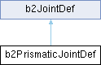

#include <b2PrismaticJoint.h>
Inheritance diagram for b2PrismaticJointDef:

Public Member Functions | |
| void | Initialize (b2Body *bodyA, b2Body *bodyB, const b2Vec2 &anchor, const b2Vec2 &axis) |
Public Attributes | |
| b2Vec2 | localAnchorA |
| The local anchor point relative to bodyA's origin. | |
| b2Vec2 | localAnchorB |
| The local anchor point relative to bodyB's origin. | |
| b2Vec2 | localAxisA |
| The local translation unit axis in bodyA. | |
| float32 | referenceAngle |
| The constrained angle between the bodies: bodyB_angle - bodyA_angle. | |
| bool | enableLimit |
| Enable/disable the joint limit. | |
| float32 | lowerTranslation |
| The lower translation limit, usually in meters. | |
| float32 | upperTranslation |
| The upper translation limit, usually in meters. | |
| bool | enableMotor |
| Enable/disable the joint motor. | |
| float32 | maxMotorForce |
| The maximum motor torque, usually in N-m. | |
| float32 | motorSpeed |
| The desired motor speed in radians per second. | |
 Public Attributes inherited from b2JointDef Public Attributes inherited from b2JointDef | |
| b2JointType | type |
| The joint type is set automatically for concrete joint types. | |
| void * | userData |
| Use this to attach application specific data to your joints. | |
| b2Body * | bodyA |
| The first attached body. | |
| b2Body * | bodyB |
| The second attached body. | |
| bool | collideConnected |
| Set this flag to true if the attached bodies should collide. | |
Detailed Description
Prismatic joint definition. This requires defining a line of motion using an axis and an anchor point. The definition uses local anchor points and a local axis so that the initial configuration can violate the constraint slightly. The joint translation is zero when the local anchor points coincide in world space. Using local anchors and a local axis helps when saving and loading a game.
Member Function Documentation
◆ Initialize()
| void b2PrismaticJointDef::Initialize | ( | b2Body * | bodyA, |
| b2Body * | bodyB, | ||
| const b2Vec2 & | anchor, | ||
| const b2Vec2 & | axis | ||
| ) |
Initialize the bodies, anchors, axis, and reference angle using the world anchor and unit world axis.
The documentation for this struct was generated from the following files:
- modules/juce_box2d/box2d/Dynamics/Joints/b2PrismaticJoint.h
- modules/juce_box2d/box2d/Dynamics/Joints/b2PrismaticJoint.cpp